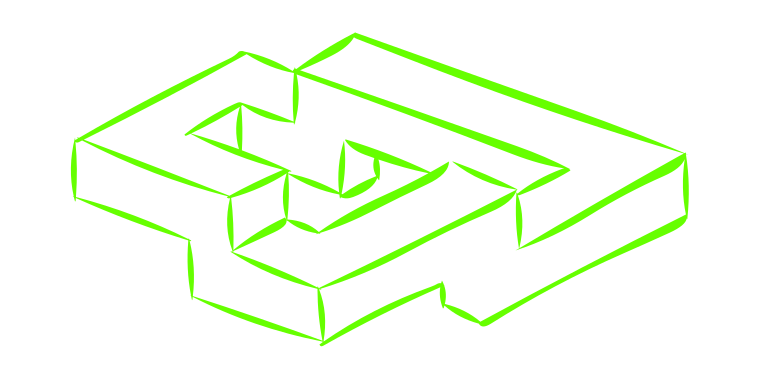

others
Other associated phenomena.
daydreaming
A daydream is a visionary fantasy, especially one of happy, pleasant thoughts, hopes or ambitions, imagined as coming to pass, and experienced while awake.
lucid dreaming
Lucid dreaming is the conscious perception of one's state while dreaming. In this state the dreamer may often have some degree of control over their own actions within the dream or even the characters and the environment of the dream.

recurring dreams
Recurring dreams are story lines or themes that repeat themselves over weeks, months and even years. Sometimes they leave you feeling puzzled because they seem irrational.